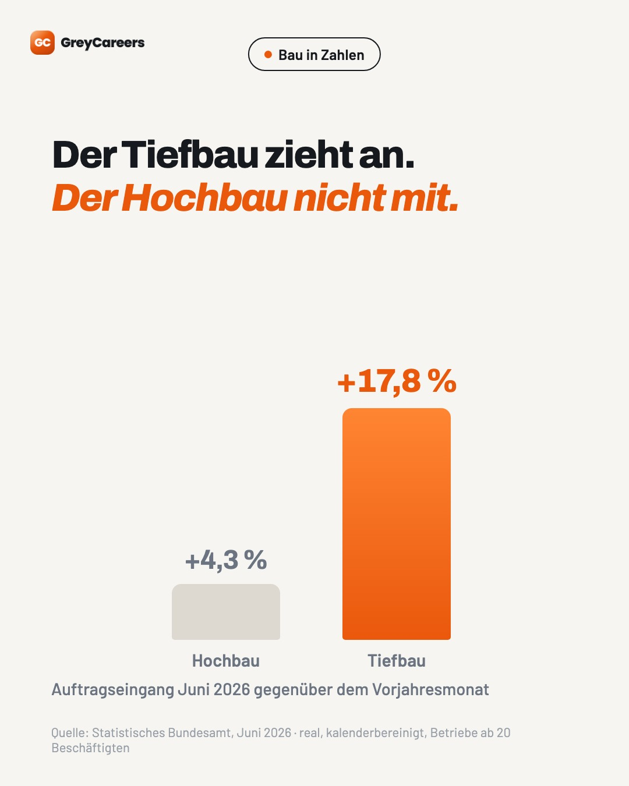

#1
Mi 26.08.2026 · 18:00 Uhr
Einzelbild
Der Tiefbau hat im Juni 17,8 % mehr Aufträge hereingeholt als ein Jahr zuvor. Der Hochbau 4,3 %. Das ist keine Momentaufnahme. Das Sondervermögen läuft an, Straßen, Brücken und Leitungsnetze werden gleichzeitig saniert, und die öffentliche Hand vergibt weiter. Für Bauunternehmen heißt das: Die Auftragsbücher füllen sich schneller als die Kolonnen. Genau daran entscheidet sich 2026, wer die Aufträge auch abarbeiten kann. 👉 bau.green-careers.de Quelle: Statistisches Bundesamt, Auftragseingang Bauhauptgewerbe Juni 2026 (real, kalenderbereinigt, Betriebe ab 20 Beschäftigten) #tiefbau #bauhauptgewerbe #baustelle
Erst-Kommentare
- Wie sieht es bei euch aus – volle Bücher oder ruhige Wochen?